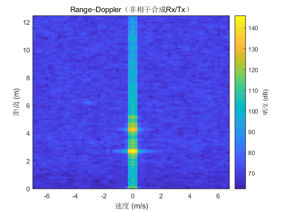
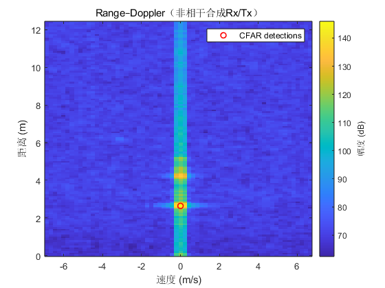
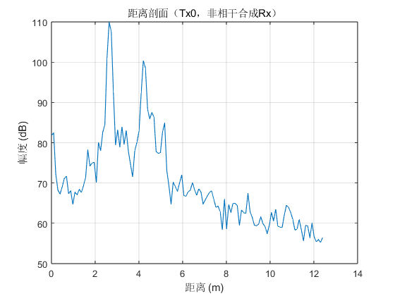
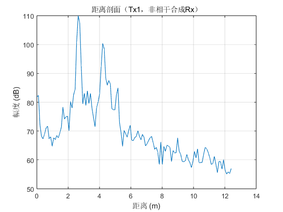
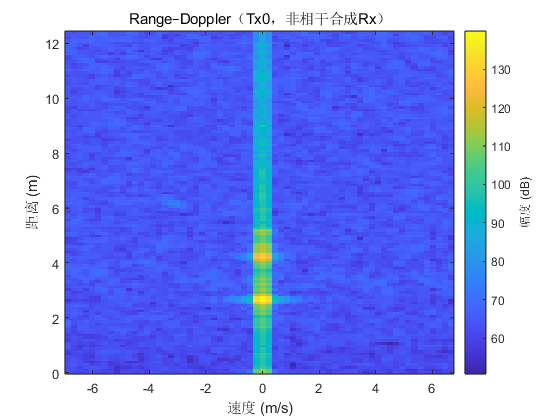

Contents
- main_tdm2tx_demo.m —— add CA-CFAR detection (Guard=8, Win=32, Thr=18 dB)
- ====== 基本参数（按你的实际配置填写） ======
- ====== CFAR 参数 ======
- ====== 读取原始数据：返回 [Nrx x Nsamp] ======
- ====== 可选：粗搜最佳起点偏移（0..Nr-1 样点） ======
- ====== 截取一帧并 reshape 到 [Nr, Nd, Nrx] ======
- ====== 按 2Tx 的 TDM 顺序拆分慢时间到每个 Tx ======
- ====== 1D 距离向 FFT ======
- ====== 2D 多普勒/速度向 FFT（沿慢时间） ======
- ====== Range–Doppler 图（非相干合成 Rx/Tx） ======
- ====== —— 新增：CA-CFAR 目标检测（在功率图上做） ======
- （保留）每个 Tx 的距离剖面 / Range–Doppler
- ==================== 子函数：1D CA-CFAR（均值） ====================
main_tdm2tx_demo.m —— add CA-CFAR detection (Guard=8, Win=32, Thr=18 dB)
clear; close all; clc;
====== 基本参数（按你的实际配置填写） ======
SampleRate = 5e6; % Fs, ADC采样率 [Hz] FrequencySlope = 30e12; % 调频斜率 [Hz/s] Nr = 256; % 每个 chirp 的采样点数 Nd = 128; % 每帧 chirp 总数(包含所有Tx) Nrx = 4; % 接收天线数 Ntx = 2; % 发射天线数 (TDM-MIMO) fc = 77.94745e9; % 载频 [Hz] c = 3e8; % 光速 lambda = c/fc; Tc = 70e-6; % 单个chirp周期(含idle) [s] dataFile = './reflect_verticlal.bin'; DO_OFFSET_SEARCH = true;
====== CFAR 参数 ======
CFAR_guard = 8; % Guard window size CFAR_window = 32; % Training window (每侧) CFAR_thr_dB = 18; % 门限(dB) —— x > alpha * 均值 alpha = 10^(CFAR_thr_dB/10);
====== 读取原始数据：返回 [Nrx x Nsamp] ======
adc = readDCA1000(dataFile); % 默认 16bit, 4 lanes, 复数IQ
====== 可选：粗搜最佳起点偏移（0..Nr-1 样点） ======
bestOff = 0; if DO_OFFSET_SEARCH numChirps = Nd; Ns_need = Nr*numChirps; assert(size(adc,2) >= Ns_need+Nr, '数据长度不足以做offset搜索'); bestScore = -inf; for off = 0:Nr-1 adcFrame = adc(:, 1+off : off+Ns_need); tmp = permute( reshape(adcFrame, [Nrx, Nr, numChirps]), [2 3 1] ); % [Nr,Nd,Nrx] RFFT_test = fft(tmp .* reshape(hann(Nr),[Nr 1 1]), Nr, 1); prof = squeeze(mean(mean(abs(RFFT_test(1:floor(Nr/2),:,:)),3),2)); % 距离剖面 score = max(prof); if score > bestScore bestScore = score; bestOff = off; end end fprintf('自动选择的起点偏移 = %d 样点\n', bestOff); end
自动选择的起点偏移 = 216 样点
====== 截取一帧并 reshape 到 [Nr, Nd, Nrx] ======
numChirps = Nd; % 总 chirp 数（包含所有Tx） adcFrame = adc(:, 1+bestOff : bestOff+Nr*numChirps); tmp = permute( reshape(adcFrame, [Nrx, Nr, numChirps]), [2 3 1] ); % [Nr,Nd,Nrx]
====== 按 2Tx 的 TDM 顺序拆分慢时间到每个 Tx ======
Nd_perTx = numChirps / Ntx; assert(mod(numChirps,Ntx)==0, 'Nd(%d) 不是 Ntx(%d) 的整数倍', numChirps, Ntx); cube = zeros(Nr, Nd_perTx, Nrx, Ntx); for tx = 1:Ntx chirpIdx = tx:Ntx:numChirps; % Tx序列: Tx1,Tx2,Tx1,Tx2,... cube(:,:,:,tx) = tmp(:, chirpIdx, :); % [Nr,Nd_perTx,Nrx] end
====== 1D 距离向 FFT ======
range_win = hann(Nr); cube_win = cube .* reshape(range_win, [Nr 1 1 1]); NfftR = Nr; % 可按需零填充 RFFT = fft(cube_win, NfftR, 1); % [NfftR, Nd_perTx, Nrx, Ntx] % 只取正频半谱 Nr_pos = floor(NfftR/2); RFFT = RFFT(1:Nr_pos, :, :, :); % [Nr_pos, Nd_perTx, Nrx, Ntx] % 物理距离轴 range_axis = (0:Nr_pos-1) * (SampleRate/NfftR) * c / (2*FrequencySlope);
====== 2D 多普勒/速度向 FFT（沿慢时间） ======
%RFFT_dc = RFFT - mean(RFFT, 2); % 去静杂波 RFFT_dc = RFFT; dop_win = hann(Nd_perTx).'; RFFT_w = RFFT_dc .* reshape(dop_win, [1 Nd_perTx 1 1]); NfftD = Nd_perTx; RD = fftshift(fft(RFFT_w, NfftD, 2), 2); % [Nr_pos, NfftD, Nrx, Ntx] % 速度轴（注意 TDM 有效PRF = 1/(Ntx*Tc)） PRF_perTx = 1/(Ntx*Tc); fD_axis = (-NfftD/2:NfftD/2-1)/NfftD * PRF_perTx; v_axis = (lambda/2) * fD_axis; % 速度分辨率与不模糊速度 v_res = (lambda/2) * (PRF_perTx/NfftD); v_max = (lambda/2) * (PRF_perTx/2); fprintf('速度分辨率: %.4f m/s, 最大不模糊速度: ±%.4f m/s\n', v_res, v_max);
速度分辨率: 0.2148 m/s, 最大不模糊速度: ±6.8728 m/s
====== Range–Doppler 图（非相干合成 Rx/Tx） ======
画幅度图（保持你原有显示）
RD_mag = squeeze(sum(sum(abs(RD), 3), 4)); % [Nr_pos, NfftD] RD_dB = 20*log10(RD_mag + eps); figure(1); imagesc(v_axis, range_axis, RD_dB); axis xy; xlabel('速度 (m/s)'); ylabel('距离 (m)'); title('Range–Doppler（非相干合成Rx/Tx）'); cb = colorbar; cb.Label.String = '幅度 (dB)'; hold on;
====== —— 新增：CA-CFAR 目标检测（在功率图上做） ======
RD_pow = squeeze(sum(sum(abs(RD).^2, 3), 4)); % 功率图 [Nr_pos, NfftD] % 每个多普勒bin做 1D CA-CFAR（沿距离维） detMask = false(size(RD_pow)); for d = 1:NfftD x = RD_pow(:, d); % 该多普勒列的功率 detMask(:, d) = cfar_ca_1d(x, CFAR_window, CFAR_guard, alpha); end % 抑制邻近多次命中，只保留局部最大 detMask = detMask & (imregionalmax(RD_pow)); % 取出检测点并叠加到 RD 图 [idx_r, idx_d] = find(detMask); plot(v_axis(idx_d), range_axis(idx_r), 'ro', 'MarkerSize', 6, 'LineWidth', 1.2); legend('CFAR detections'); % 打印检测到的目标 (距离, 速度) for k = 1:numel(idx_r) fprintf('Detection %2d: Range = %.2f m, Velocity = %.2f m/s\n', ... k, range_axis(idx_r(k)), v_axis(idx_d(k))); end
（保留）每个 Tx 的距离剖面 / Range–Doppler
for tx = 1:Ntx RP_tx = squeeze(mean(sum(abs(RFFT(:,:,:,tx)),3),2)); % [Nr_pos x 1] figure; plot(range_axis, 20*log10(RP_tx + eps)); grid on; xlabel('距离 (m)'); ylabel('幅度 (dB)'); title(sprintf('距离剖面（Tx%d，非相干合成Rx）', tx-1)); end for tx = 1:Ntx RD_tx = squeeze(sum(abs(RD(:,:,:,tx)),3)); % [Nr_pos, NfftD] figure; imagesc(v_axis, range_axis, 20*log10(RD_tx + eps)); axis xy; xlabel('速度 (m/s)'); ylabel('距离 (m)'); title(sprintf('Range–Doppler（Tx%d，非相干合成Rx）', tx-1)); cb = colorbar; cb.Label.String = '幅度 (dB)'; end  

==================== 子函数：1D CA-CFAR（均值） ====================
function detMask = cfar_ca_1d(x, win, guard, alpha) % x : 列向量(功率) % win : 每侧训练单元数 % guard : 每侧保护单元数 % alpha : 阈值系数（>1），等效 10^(门限_dB/10) N = numel(x); detMask = false(N,1); for i = 1:N l1 = max(1, i - guard - win); l2 = max(1, i - guard - 1); r1 = min(N, i + guard + 1); r2 = min(N, i + guard + win); train = [x(l1:l2); x(r1:r2)]; if numel(train) < 4, continue; end mu = mean(train); if x(i) > alpha * mu detMask(i) = true; end end end
Detection 1: Range = 2.64 m, Velocity = 0.00 m/s